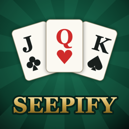

Android card games
The card games you grew up playing, built properly for a phone.
Two games, made in India. They run on the phone in your hand and nowhere else.
Nothing to sign in to. Nothing sent anywhere. No ads, no in-app purchases, no accounts, no analytics. Both games work with aeroplane mode on.
The games
On Google Play
JOKR — Joker Kiske Paas?
Pair up, pass it on — and don’t get caught holding the Joker. Old Maid for 4–7 people round one phone, or you against the bots.

In development
Seepify
Seep (सीप) — the Indian four-player partnership fishing game, with rules that are actually correct and a table that shows you why.
What both games do the same way
- They work offline. No connection needed, ever — not to start, not to play, not to keep your progress.
- No ads and no in-app purchases. No coins, no entry fees, no wagering, nothing to unlock.
- No sign-in. There is no account to create and no password to forget.
- No data collected. No analytics, no crash reporting, no advertising identifiers. What the games save stays in their own storage on your device and goes when you uninstall.
- Built for a shared phone. Games you can hand around a room, the way these games are actually played.
Get in touch
Questions, bug reports and rule arguments all welcome: jokr.gamify@gmail.com